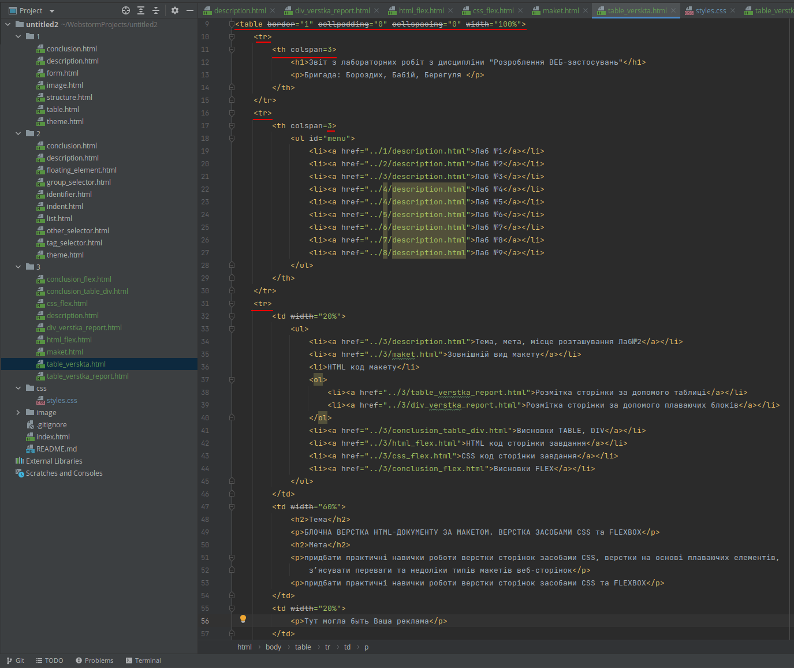

Ознайомитись з макетом, зробленним за допомогою табличної верстки, можна за посиланням
| Таблиця | Слои | |
|---|---|---|
| Колонки | Колонки формуються ячейками таблиці, їх висота однакова та взаємопов'язана. | Колонки створюються різними шарами, їхня висота різна і залежить від змісту. |
| Ширина | Якщо ширина таблиці не вказана, вона обчислюється на основі вмісту таблиці. | За замовчуванням шар займає всю доступну йому ширину. |
| Розташування | Рядки таблиці відображаються в тому порядку, як вони представлені у коді. Осередки йдуть зліва направо і зверху вниз. | Порядок шарів у коді може не відповідати їхньому положенню в браузері. |
| Завантаження | Як правило, доки таблиця не завантажиться повністю, вміст її не показуватиметься. Якщо на веб-сторінці розміщена велика таблиця, завантаження сторінки значно уповільнюється. | Шари відображаються послідовно при завантаженні документа. |
| HTML-код | Код створення таблиць може бути громіздкий, особливо якщо потрібно об'єднати безліч осередків або зробити кілька вкладених таблиць. | Код зазвичай компактний. |
| Вирівнювання по висоті | Вміст всередині комірки легко вирівнювати по верхньому, нижньому краю або середині. | Вирівнювання нетривіальне. |
Як видно з таблиці, різниця між таблицями та шарами суттєва, особливо це стосується колонок. У таблиці колонки, створювані ячейками, мають однакову висоту, при верстці шарами доводиться використовувати штучні методи, щоб досягти подібного результату. Справа в тому, що ідеологія шарів не передбачає їх штучне розтягування, і методи побудови колонок однакової висоти побудовані як правило, на візуальному обмані.
Код табличного вертстання
